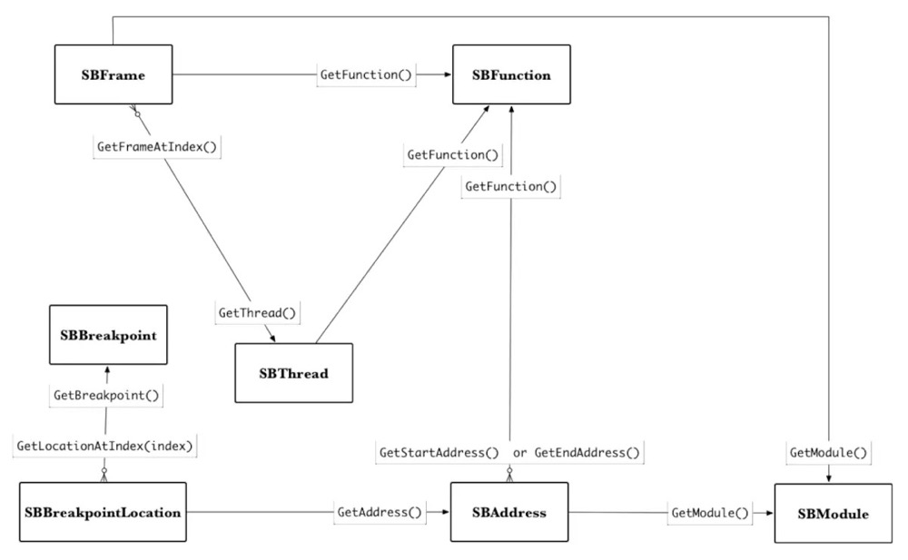

lldb-help
[TOC]
#some lldb tips
通用
1.计算偏移/ida地址
1 | p/x 0X000000010095ECCC+0X0000000000038000 |
###2.观察断点
1 | watchpoint set expression -w write ―- 0xl01801a48 :给某个地址设置观察断点,内存进行写操作时就会触发断点 |
3.读取目标地址的内存指令
1 | x/10xg 0xl01801a48 这里的x 表示用十六进制来显示结果。"g"代表giant word(8字节)大小。所以就是用十六进制显示 0x101801a48所指恐惧的10个64位的元素内容。常见的大小格式为"b-byte"(1字节),"h-half word"(2字节),"w- word”(4字节),"g-giantword”(8字节)。 |
4.dis-a$pc 反汇编指定地址
这里是pc寄存器所对应的地址。
5.f2:切换到当前调用栈为2的位置，也就是bt中的frame #2。
6.threadinfo:输出当前线程的信息。
7.b ptrace -c xxx:满足某个条件之后程序才会中断。
8.help/apropos
9.断点后执行命令
1 | b +[Manager performLoginWithUsernameOnEmail: password: preAuthToken: twoFAMethod: confirmReactivation: rememberDevice:fromDeepLink:onComplete:] |
10. xcode预处理快捷键
单击 Product -> PerformAction ->Preprocess xxxx 可以对文件进行预处理，还可以将代码转换成汇编代码。可以帮助我们理解这些宏的作用
11.pdb来排查了一个脚本中的问题
1 | (lldb) findclass |
12.如何将断点设置在动态库的入口
1 | LLDB命令行进行调试时自 动中断在 _dyld_start 处，因为此时dyld已经加载，所以在dyld里面设置一个在所有库中加载并且在constructor 函数执行之前执行的断点，例如initializeMainExecutable |
13.基本的类：
- lldb.SBDebugger：在你的脚本中用来访问类的实例的类，非常中心，还处理LLDB命令的输入和输出
- lldb.SBTarget：与被调试的可执行文件有关（相关调试文件，磁盘上的文件）。
你可以用SBDebugger的实例来获取到当前选择的SBTarget。然后 你就可以通过SBTarget访问大部分其余类。 - lldb.SBProcess：SBTarget和SBProcess是一对多的关系：SBTarget管理者一个或多个SBProcess实例。SBProcess处理内存读写还有它自己的线程。
- lldb.SBThread：管理对应线程的栈帧和stepping的控制逻辑
- lldb.SBFrame：管理局部变量（debug信息有提供的）和当时的寄存器快照
- lldb.SBModule：代表着一个可执行文件。
- lldb.SBFunction：这代表着一个加载到内存中的函数（或者对应代码），它与SBFrame是一对一的关系。
实例是 lldb.debugger/lldb.target…
https://lldb.llvm.org/python_reference/index.html
演示了LLDB Python主要的几个类之间的相互关系

暂停在某函数时几个类的交互android
Cronet.framework git:(master) X otool -hf Cronet Fat headers1
2
3```
## iOS
### 1.砸壳
fat_magic 0xcafebabe
nfat_arch 2
architecture 0 cputype 12 cpusubtype 9 capabilities 0x0
offset 16384 size 2749664 align 2A14 (16384)
architecture 1 cputype 16777228 cpusubtype 0 capabilities 0x0
offset 2768896 size 3612224 align 2A14 (16384)
Mach header
magic cputype cpusubtype caps filetype ncmds sizeofcmds flags
Oxfeedface 12 9 0x00 6 27 3328 0x00118085
Mach header
magic cputype cpusubtype caps filetype ncmds sizeofcmds flags
0xfeedfacf 16777228 0 0x00 6 27 3816 0X00118085
otool -arch arm64 -1 Cronet | grep crypt
cryptoff 16384
cryptsize 3309568
cryptid 1
(lldb) im li Cronet
[0] 188F5BF7-B4C4-36EF-BB9A-976FA870F9D7 0x0000000105920000 /private/var/mobile/Containers/Bundle/Application/3A4C68EB-4059-47D4-ACE6-BE9C492DF205/ Snapchat.app/Frameworks/Cronet.framework/Cronet (0x0000000105920000)
(lldb) memory read –force –outfile ~/Desktop/dumpoutput –binary count 3309568 16384+0x0000000105920000
因为dump出来的文件都没有Mach-0文件头，所以在这里要先把dump出来的数据写回原 来加密的文件，以替换原来加密的部分
2768896(之前获取的ARM64架构的偏移值)+16384(加密数据的偏移值)=2785280(写入的加密数据在文件中的偏移值)
seek=n Seek n blocks from the beginning of the output before copying.
bs=n Set both input and output block size to n bytes
conv=value[,value …]
notrunc Do not truncate the output file.
Cronet.framework git:(master) X dd seek=2785280 bs=l conv=notrunc if=/Users/monkey/Desktop/dumpoutput of=./Cronet
3309568+0 records in
3309568+0 records out
3309568 bytes transferred in 4.698067 secs (704453 bytes/sec)
Cronet.framework git:(master) X lipo Cronet -thin arm64 -output Cronet_arm64
MachOView.app 修改Cronet_arm64 crypid 为0
1 | ### 2.查询按钮事件 |
error: error: use of undeclared identifier ‘UIApplication’
None
(lldb) expression @import UIKit
pviews
| | | | | | | | | | <UIButtonLabel: 0x101c730a0; frame = (7.5 12.5; 69.5 20.5); text = ‘所有图书’; opaque = NO; userInteractionEnabled = NO; layer = <_UILabelLayer: 0x174295a90>>
| | | | | | | | | | | <_UILabelContentLayer: 0x170425fa0> (layer)
| | | | | | | | | <IMTouchInsetsButton: 0x101c73f60; baseClass = UIButton; frame = (324 5.5; 35 33); opaque = NO; layer = <CALayer: 0x17422d880>>
| | | | | | | | | | <UIButtonLabel: 0x101c31460; frame = (9 6.5; 35 20.5); text = ‘选择’; opaque = NO; userInteractionEnabled = NO; layer = <_UILabelLayer: 0x174295360>>
查看 “登录”按钮UIButtonLabel的响应链
presponder 0x101c31460
(lldb) presponder 0x101c31460
<UIButtonLabel: 0x101c31460; frame = (9 6.5; 35 20.5); text = ‘选择’; opaque = NO; userInteractionEnabled = NO; layer = <_UILabelLayer: 0x174295360>>
| <IMTouchInsetsButton: 0x101c73f60; baseClass = UIButton; frame = (324 5.5; 35 33); opaque = NO; layer = <CALayer: 0x17422d880>>
| | <IMToolbar: 0x101c1d8b0; baseClass = UIToolbar; frame = (0 20; 375 44); opaque = NO; autoresize = W; tintColor = UIExtendedSRGBColorSpace 0 0.478431 1 1; layer = <CALayer: 0x174224ec0>>
查看“登录”按钮的Action事件
(lldb) pactions 0x101c73f60
<BKLibraryViewController: 0x102817600>: editButtonPressed:
1 | ### 3.chisel 打印结构 |
< NSMallocBlock : 0Xl7444b6d0>
(lldb) pblock 0xl7444b6d0
(lldb) pvc
<ICSplitViewController 0x10079eab0>, state: appeared, view: <UILayoutContainerView 0x1009261c0>
| <UIMultiColumnViewController 0x10079f410>, state: appeared, view: <UIView 0x1007aee70>
(lldb) methods 0x10079eab0
<ICSplitViewController: 0x10079eab0>:
in ICSplitViewController:
Properties:
@property (nonatomic, getter=isDetailDimmed) BOOL detailDimmed; (@synthesize detailDimmed = _detailDimmed;)
1 | ### 4.搜索UITextField的实例对象和Cycript中的choose—样的 |
search UIButton
search UITextField
Find all UIViews, ignore subclasses
find UIView -e
Find all instances of UIViews (and subclasses) where tag == 5
find UIView -c “[obj tag] == 5”
1 | ### 5.查看对象内存关系,xcode观看 |
/Applications/Xcode.app/Contents/SharedFrameworks/LLDB.framework/Versions/A/Resources/Python/lldb/macosx/heap.py
command alias iheap command script import lldb.macosx.heap
“malloc_info”, “ptr_refs”, “cstr_refs”, “find_variable”, and “objc_refs”
为了查看某个对象内存分配的调用堆栈，需要在程序启动的环境变量中设置 MallocSlack Logging。
在环境变量中增加 MallocStackLogging 的值1
单击Xcode调试工具栏上的“Debug Momery Graph”按钮
1 | ### 6. 执行script |
(lldb) e @import UIKit
(lldb) e UIApplication *$app = [UIApplication sharedApplication];
(lldb) e UlWindow *$keyWindow = $app.keyWindow
(lldb) e UlViewController *$root = $keyWindow.rootViewController
(lldb) po $root
<NavigationController: 0xl2c03d200>
(lldb) e [(SCButton *)0xl2bd4b760 setTitle:@”AloneMonkey” forStaterUIControlStateNormal]
(lldb) e (void)[CATransaction flush]
(lldb) c
1 | ### 7.在 Snapchat模块中查看与login有关的符号信息 |
image lookup -rn login UserLogin
(lldb) b -[UIView setTail:]
Breakpoint 3: where = UserLogin`-[UIView(Frame) setTail:] at UIView+Frame.m:102, address = 0x0000000100b5ee34
(lldb) il 0x0000000100b5ee34
image lookup -a 0x0000000100b5ee34
1 | ### 8.某个类的所有方法下断点并跟踪打印调用参数 |
command regex bclass ‘s/(.+)/rb [%1 /‘
rb -> breakpoint set -r %1
bclass ULLoginViewController -> breakpoint set -r [ULLoginViewController
br set -r ‘[WAChatSessionViewController .*]‘
如果不在MethodTraCeCcmflg.PliSt文件里面配置需要跟踪的类，那么如下设置:
@interface MethodTrace : NSObject
- (void)addClassTrace:(NSString*) className;
- (void)addClassTrace: (NSString )className methodName: (NSString) methodName;
- (void)addClassTrace: (NSString )className methodList: (NSArray) methodList;
@end
e [MethodTrace addClassTrace:@”WAChatDataStore”]
笔者在MethodTrace的代码里面调试了—下，发现 NSLog没有被输出到Xcode的控制台，但是在Console.app里面可以看到NSLog,所以改用printf来输出。
ENABLE_METHODTRACE
1 | ### 9.xcode 设置环境变量 |
打印参数和当前的环境变量, segment加载的详细信息,加载dylib,显示是否加载,各阶段的时间消耗
xcode DYLD_PRINT_OPTS, DYLD_PRINT_EN, DYLD_PRINT_SEGMENTS
签名InsertDyUb.dylib,拷贝 InsertDylib.dylib 到Bundle Resources
xcode 设置环境变量DYLD_INSERT_LIBRARIES @executable_path/InsertDylib.dylib
xcode 设置环境变量 DYLD_PRINT_INTERPOSING 运行 App,日志如下即为hook生效
dyld: interposing 2 tuples onto image: /var/containers/Bundle/Application/AB57C532-19F2-4022-B757-7D211296E64D/AppStart.app/InsertDylib.dylib
xcode 设置 DYLD_PRINT_STATISTICS,DYLD_PRINT_STATISTICS_DETAILS 打印各阶段的时间消耗。
@executable_path:表示可执行程序所在的目录，一般是xxx.app
@loader_path:表示每一个被加载的二进制文件的目录。例如，xxxx.plugin/aaa/abc依赖xxx.plugin/bb/ccc.dylib,那么依赖的路径可以写成 @loader_path/../bbb. 这样不管xxx.plugin放在那都能找到ccc.dylib
@rpath:这个变量是在 Xcode build里面设置， Dynamic Libray Install Name设置为(#=@path/xxx/xxx,就可以在使用的工程中设置一个或多个RunPath Search Paths 来指定搜索路径。在运行时，会将@rpath分别替换为Runpath Search Paths中指定的路径来査找动态库。
1 | ### 10.iOS 分析常见点 |
handleLongPressAtPoint函数就是用于处理长按事件的函数
第一响应者实现 canPerformAction:withSender: 来确定当前哪些操 作是被允许的、哪些操作是不被允许的。
```
macos
转载请注明来源，欢迎对文章中的引用来源进行考证，欢迎指出任何有错误或不够清晰的表达。可以在下面评论区评论，也可以邮件至 pandashellcode@gmail.com
文章标题:lldb-help
本文作者:pandamac
发布时间:2020-02-23, 13:29:19
最后更新:2020-02-23, 13:29:41
原始链接: http://pandamac.github.io/2020/02/23/lldb-help/版权声明: "pancmac-共享 4.0" 转载请保留原文链接及作者。